AbstractIn a team, whether an agent can take its next step hinges on what its teammates have completed. Existing memories store procedures without these cross-agent prerequisites, so experience can neither be checked during execution nor separated from incidental co-occurrence. SEPM uses task dependency graphs as one representation for both coordination and memory: executable steps are nodes and prerequisites are edges. During execution, a step runs only after its prerequisites are verified, and goal, plan, and state divergence is corrected on a shared blackboard; afterwards, verified steps and edges are distilled into versioned procedures under evidence gates.
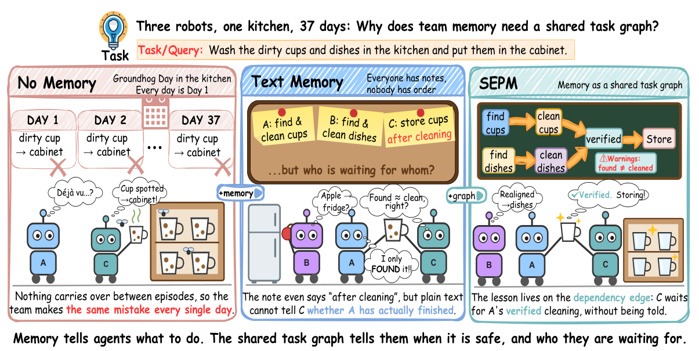
Text changes behavior only if each agent interprets it correctly, and no single agent can confirm a prerequisite that spans several agents.
SEPM: store prerequisites as graph edges that the executor checks before dispatching a step.
The order of interleaved steps does not reveal which steps enabled later ones, so memory evolution is a credit-assignment problem.
SEPM: keep only the steps and edges that verification records support, not temporal precedence.
A retrieved procedure is instantiated as a shared task graph. The same graph constrains which steps may run, anchors the alignment of every agent, and decides what the team retains after the task.
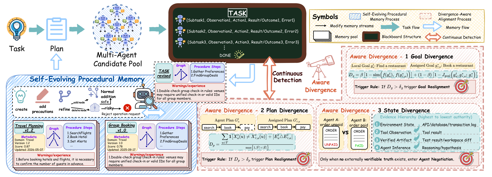
Commits are atomic (compare-and-swap on the head version), and no operation deletes a procedure or a version, so every revision can be audited and rolled back.
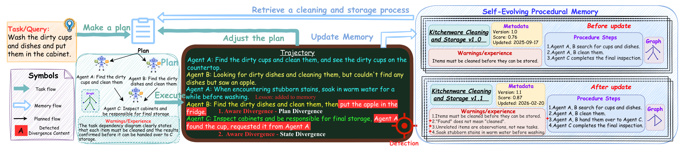
| AutoGen | DyLAN | |||||||
|---|---|---|---|---|---|---|---|---|
| Memory | ALFWorld | WebArena | OfficeB. | Avg. | ALFWorld | WebArena | OfficeB. | Avg. |
| No added memory | 59.45 | 12.44 | 41.33 | 37.74 | 53.98 | 14.90 | 33.56 | 34.15 |
| Generative Agents | 85.32 | 15.27 | 38.67 | 46.42 | 65.17 | 15.27 | 32.89 | 37.78 |
| MetaGPT | 77.86 | 25.99 | 45.11 | 49.65 | 49.50 | 22.41 | 35.22 | 35.71 |
| G-Memory | 83.08 | 30.30 | 49.67 | 54.35 | 62.19 | 25.49 | 42.44 | 43.37 |
| LEGOMem | 84.08 | 31.65 | 51.33 | 55.69 | 63.68 | 26.35 | 43.78 | 44.60 |
| MATM | 81.34 | 29.31 | 48.44 | 53.03 | 61.44 | 24.75 | 41.22 | 42.47 |
| AWM† | 80.10 | 26.48 | 46.44 | 51.01 | 60.70 | 23.40 | 38.89 | 41.00 |
| Memp† | 82.09 | 27.34 | 47.22 | 52.22 | 62.44 | 24.14 | 39.56 | 42.05 |
| SEPM (ours) | 89.05 | 38.30 | 54.44 | 60.60 | 68.41 | 29.80 | 47.11 | 48.44 |
| vs. strongest baseline | +3.73 | +6.65 | +3.11 | +4.91 | +3.23 | +3.45 | +3.33 | +3.84 |
gpt-5-mini. ALFWorld and OfficeBench: mean of three shuffled task orders; WebArena: one run. SEPM is best in every column; second best underlined. † Single-agent memory adapted to the team with role-specific allocation.| TDW-MAT (TR ↑) | C-WAH | |||
|---|---|---|---|---|
| CoELA host | Food | Stuff | Avg. | Steps ↓ |
| No added memory | 68.33 | 58.33 | 63.33 | 92.4 |
| G-Memory | 72.50 | 61.67 | 67.08 | 87.1 |
| AWM† | 70.83 | 60.00 | 65.42 | 88.5 |
| LEGOMem | 73.33 | 62.50 | 67.92 | 85.6 |
| SEPM (ours) | 79.17 | 68.33 | 73.75 | 79.8 |
Beyond the main table, we test whether stored experience actually changes later behavior (ImplicitMemBench), whether the gain survives a change of execution model, and whether coordination itself improves (MultiAgentBench).
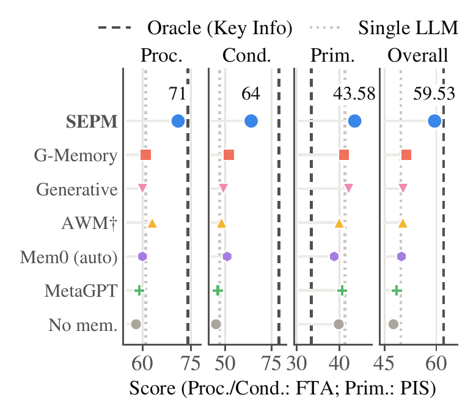
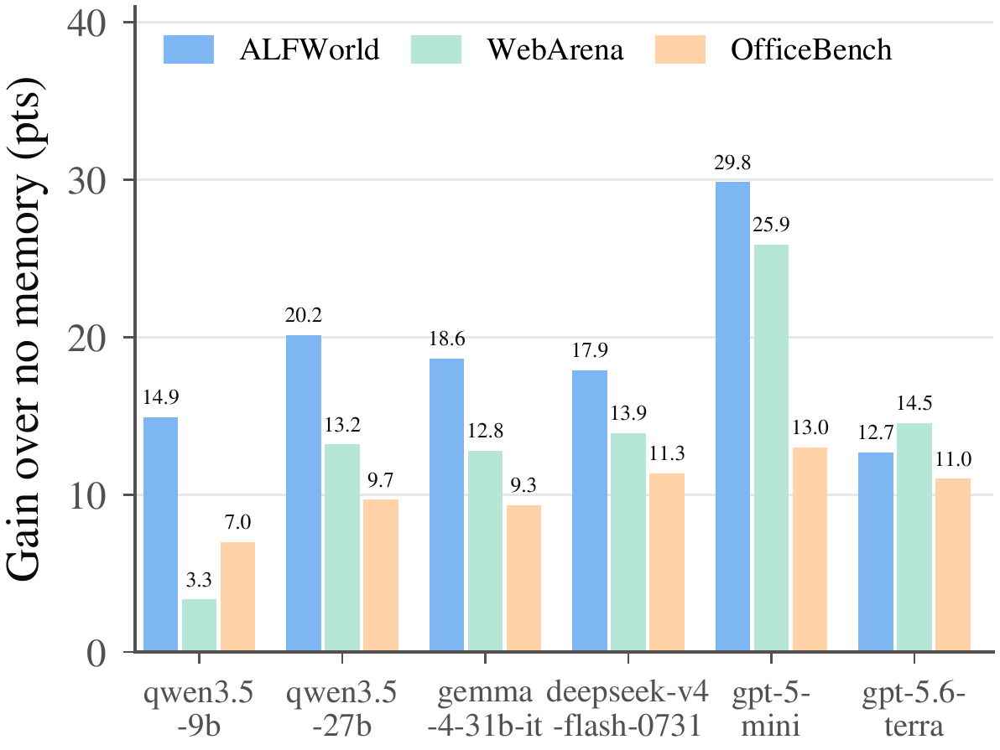
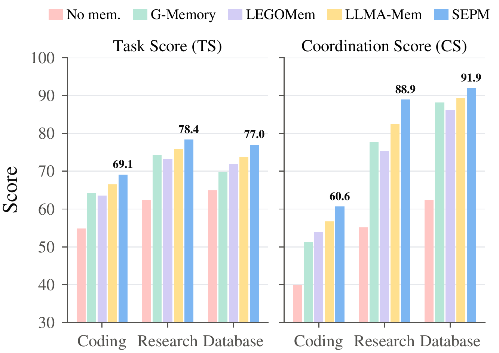
gpt-5-mini (82% of the oracle's gain); no baseline gains more than 3.75. With Qwen2.5-7B: 41.12 → 50.98.gpt-5.6-terra, the strongest without memory, gains 12.69 / 14.54 / 11.00.Because only evidence-supported structure is retained, the pool keeps improving along the task sequence and carries over to unseen task types, other hosts, and other models without any update.
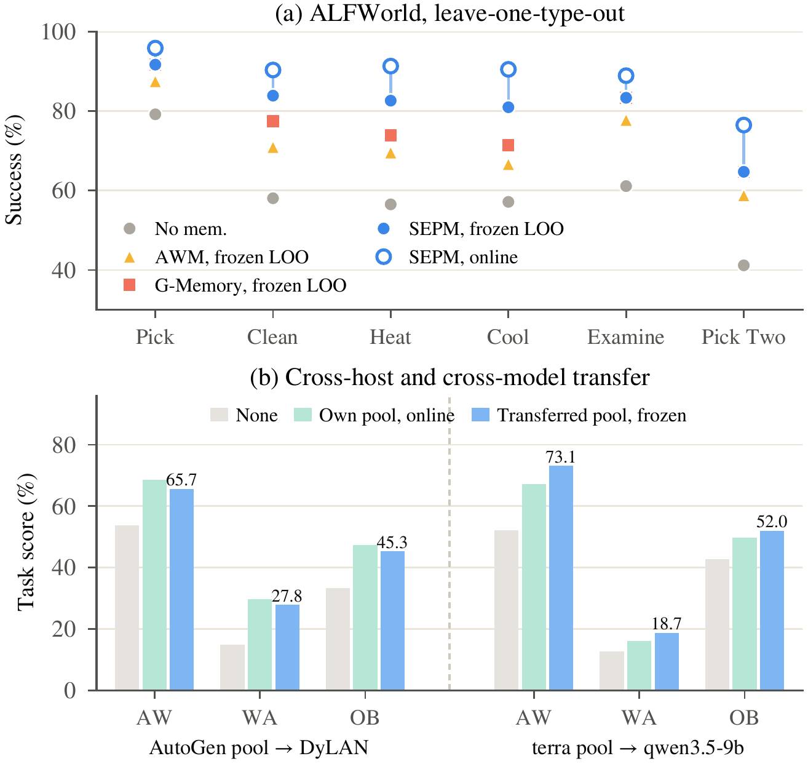
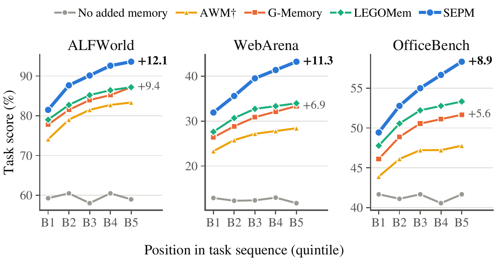
gpt-5.6-terra lifts qwen3.5-9b by 5.97 / 2.71 / 2.33 points above its own online pool: the retained structure carries what a stronger model discovers to a weaker one.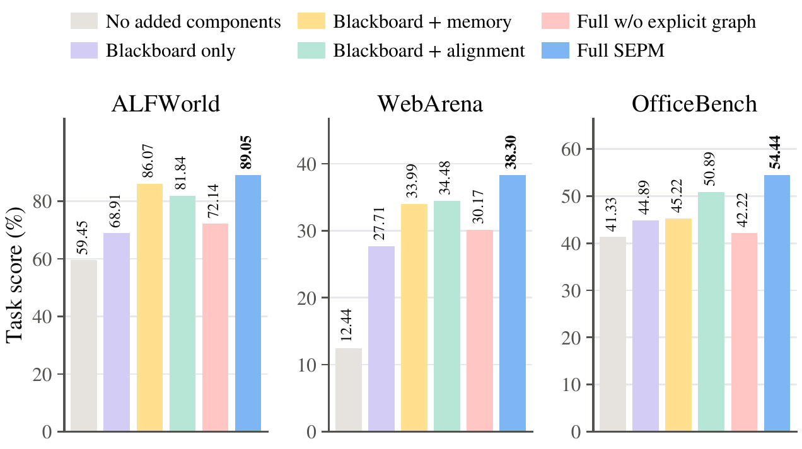
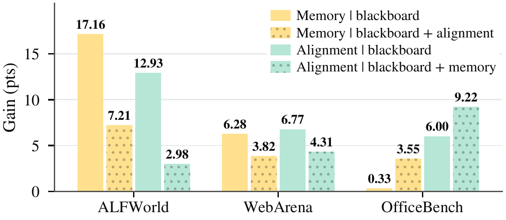
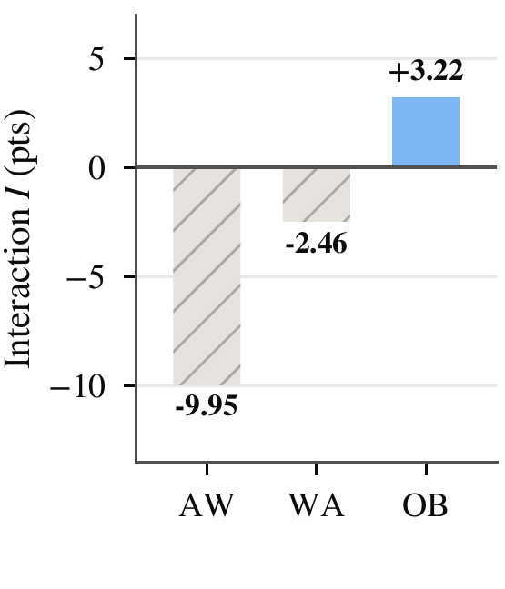
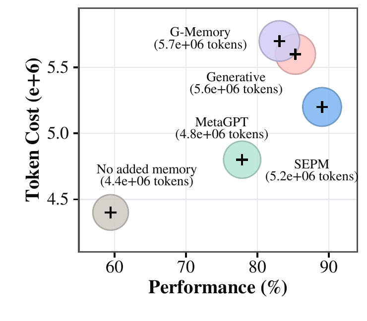
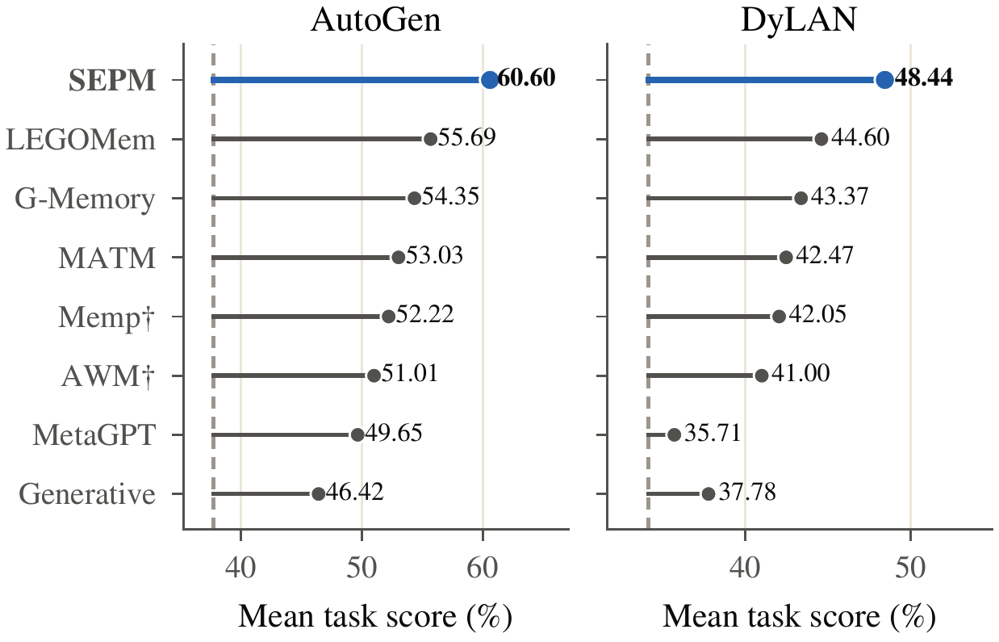
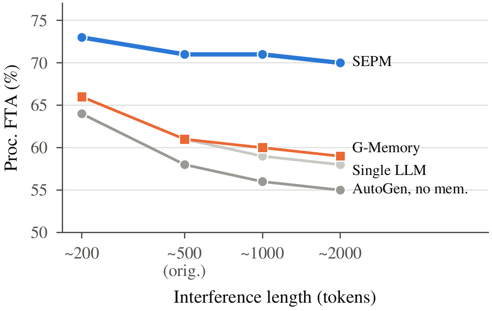
gpt-5-mini, one run). About 500 tokens corresponds to the original items.Full ImplicitMemBench breakdown, sensitivity to the alignment hyperparameters, and run-to-run variation of the ablation. All thresholds were fixed before evaluation and shared across benchmarks.
gpt-5-mini | Proc. | Cond. | Prim. | Overall | Δ | Tok./item | Calls/item |
|---|---|---|---|---|---|---|---|
| Single LLM (no MAS) | 61 | 47 | 41.27 | 49.76 | +2.15 | 2.1k | 8 |
| AutoGen, no added memory | 58 | 45 | 39.83 | 47.61 | – | 9.6k | 31 |
| + Generative Agents | 60 | 49 | 42.15 | 50.38 | +2.77 | 12.4k | 38 |
| + MetaGPT | 59 | 46 | 40.62 | 48.54 | +0.93 | 10.8k | 34 |
| + G-Memory | 61 | 52 | 41.08 | 51.36 | +3.75 | 13.1k | 39 |
| + AWM† | 63 | 48 | 39.93 | 50.31 | +2.70 | 11.2k | 35 |
| + Mem0 (automatic) | 60 | 51 | 38.77 | 49.92 | +2.31 | 11.7k | 37 |
| + SEPM (ours) | 71 | 64 | 43.58 | 59.53 | +11.92 | 12.6k | 41 |
| Mem0 + Key Info (oracle) | 74 | 79 | 33.40 | 62.13 | +14.52 | 10.1k | 32 |
gpt-5-mini (single run). Proc./Cond.: first-attempt accuracy; Prim.: priming influence score; Δ relative to AutoGen without added memory. Second-best non-oracle score underlined.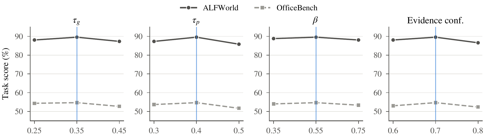
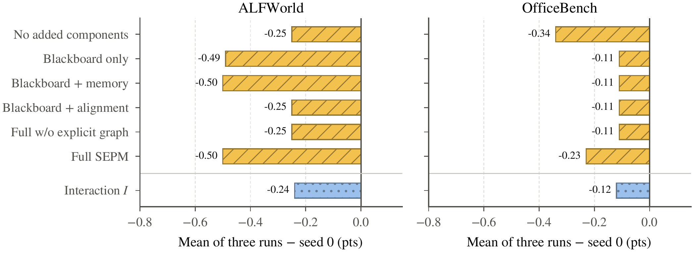
The core library depends only on Pydantic and runs without an API key. All commands assume a Linux shell with Python ≥ 3.10. The code is provided in the supplementary material and will be publicly released.
cd SEPM # unpacked supplementary archive python3 -m venv .venv && source .venv/bin/activate pip install -e ".[dev]" # add ",eval" for the benchmark harnesses cp .env.example .env # set OPENAI_API_KEY and OPENAI_BASE_URL
python examples/end_to_end.py # plan, validate, publish, retrieve sepm --db sepm_demo.db retrieve "verified catalog results" pytest -q && ruff check src adapters tests # unit and integration-contract tests sepm-benchmark # deterministic mechanism checks, no LLM
SEPM and the included baselines (official G-Memory, Generative Agents, and MetaGPT memory classes; Mem0) implement one plug-in contract, so a host swaps memories without other changes.
from sepm.llm_client import LLMClient, UsageMeter from sepm.plugins.sepm_plugin import SEPMPlugin memory = SEPMPlugin(database_path="pool.db", task_family="my_tasks", client=LLMClient(), meter=UsageMeter()) memory.begin_task("task-1", goal) prompt_block = memory.context("agent-a", goal) # procedures + warnings corrections = memory.record("agent-a", action, observation) # blackboard + alignment memory.end_task(success=True, reward=1.0) # outcome, trials, extraction
SEPM/ ├── src/sepm/ # core library │ ├── plugins/ # memory plug-in contract │ ├── hosts/ # AutoGen-style team host │ ├── bench/ # harnesses + report │ └── ablation/ # component ablation ├── adapters/ # ALFWorld, OfficeBench ├── scripts/ # experiment suites ├── examples/ # end-to-end example ├── tests/ # unit and contract tests ├── evaluation_matrix.json └── environment.yml
| Retrieved procedures K | 5 |
| BM25 k1, b | 1.5, 0.75 |
| Goal weight β, threshold δg | 0.55, 0.35 |
| Plan threshold δp | 0.40 |
| Evidence confidence | 0.70 |
| Safety-risk threshold | 0.50 |
| Dependency support cdep | 0.65 |
| Qualified trials m | 1 |
| Cost weight λ | 1.0 |